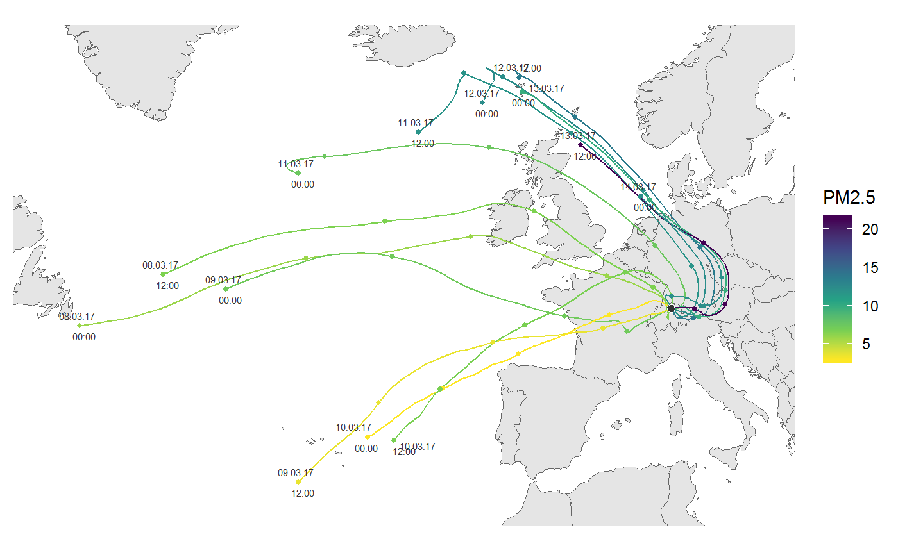

Plotting hysplit trajectory
ggtraj( data, mapping = NULL, incr = -seq(24, 96, 24), lims = NULL, add_traj_labels = TRUE, color_scale = ggplot2::scale_color_viridis_c(name = "m agl.") )
Arguments
| data | tibble containing hysplit trajectories, format preferably similar to that of the 'openair' package |
|---|---|
| mapping | add or overwrite mappings. default is aes(x = lon, y = lat, group = date, color = height) |
| incr | sequence of hours to draw an marker on the trajetory. Default -seq(24,96,24); if NULL no increment markers are plotted |
| lims | list with xlim and ylim items defining the map section. See |
| add_traj_labels | add text labels with date and time for every trajectory |
| color_scale | ggplot2 color scale |
Value
ggplot2 object
Examples
library(ggplot2) fn <- rOstluft.data::f("2017_ZH-Kaserne-hysplit.rds") traj <- readRDS(fn) start <- lubridate::ymd("2017-03-08", tz = "UTC") end <- lubridate::ymd("2017-03-14", tz = "UTC") traj <- dplyr::filter(traj, dplyr::between(date, start, end) ) ggtraj(traj)# air pollutant instead of trajectory height # can be interesting e.g. with long-range transport of EC, # but we don't have EC data ready at hand, so we use PM2.5 here instead data_2017 <- rOstluft.data::f("Zch_Stampfenbachstrasse_min30_2017.csv") %>% rOstluft::read_airmo_csv() %>% rOstluft::rolf_to_openair() data_traj <- dplyr::select(data_2017, -site) %>% dplyr::right_join(traj, by = "date") cs <- scale_color_viridis_c(name = "PM2.5", direction = -1) ggtraj(data_traj, aes(color = PM2.5), color_scale = cs)